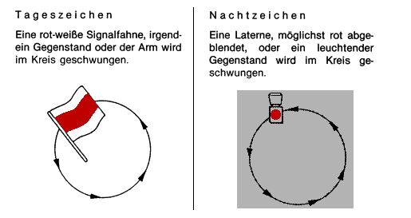
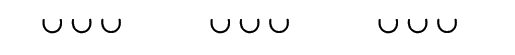
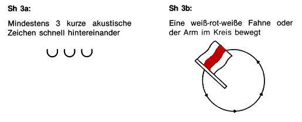
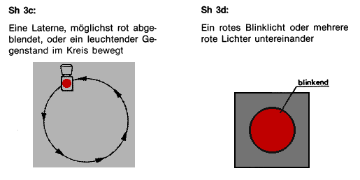

(1) Der Unternehmer darf Arbeiten im Bereich von Gleisen nur ausführen, wenn die Versicherten gegen die von bewegten Schienenfahrzeugen ausgehenden Gefahren gesichert werden durch
Dies gilt auch für den Weg zur und von der Arbeitsstelle. DA
(2) Werden zur Sicherung technische Einrichtungen nach Absatz 1 Nr. 2 verwendet, darf der Unternehmer Arbeiten im Gleisbereich nur ausführen, wenn diese so beschaffen sind, dass Schienenfahrzeugen nicht automatisch die Fahrt in den Arbeitsbereich freigegeben werden kann. Dies gilt nicht für von einer anerkannten Prüfstelle geprüfte automatische Warnsysteme im Bereich der Deutschen Bahn.
(3) Werden vom Unternehmer Sicherungsposten eingesetzt, darf er nur Personen auswählen, die
(4) Sicherungsposten müssen
(5) Sicherungsposten dürfen während ihres Einsatzes keine anderen Tätigkeiten ausführen. Dies gilt nicht für Tätigkeiten als Warnposten im Verkehrsraum öffentlicher Straßen.
(6) Bei Einsatz von Tyfonen hat der Unternehmer Sicherungsposten mit
auszurüsten. Die Sicherungsposten haben diese Ausrüstung mit sich zu führen.
(7) Die Sicherungsaufsicht hat die Wahrnehmbarkeit der von Sicherungsposten gegebenen Warnsignale durch die Versicherten
durch Proben festzustellen. Die zur Probe gegebenen Warnsignale müssen unter den zu erwartenden ungünstigsten Betriebs- und Umgebungsbedingungen von den Versicherten wahrgenommen werden können. Bei gleichbleibenden Betriebs- und Umgebungsbedingungen kann auf die tägliche Wiederholung der Probe nach Satz 1 verzichtet werden. DA
(8) Der Unternehmer hat dafür zu sorgen, dass Versicherte, die Sicherungsaufgaben ausführen, über ihre Aufgaben mindestens einmal jährlich unterwiesen und die Unterweisungen schriftlich festgehalten werden.
Organisatorische Maßnahmen sind z. B.:
Technische Einrichtungen sind z. B.:
Die jeweiligen örtlichen und betrieblichen Verhältnisse wie z. B.
beeinflussen die Auswahl der jeweils geeigneten technischen Einrichtungen.
Kombinationen von Sicherungsmaßnahmen sind für Arbeiten in gesperrten Gleisen und in Baugleisen der Deutschen Bahn AG z. B. in den Abschnitten 12 und 14 der "Bestimmungen zum Schutz gegen Gefahren aus dem Eisenbahnbetrieb bei Arbeiten im Bereich von Gleisen" (DS 132 03) festgelegt.
Die Deutsche Bahn AG verlangt nach ihren "Bestimmungen zum Schutz gegen Gefahren aus dem Eisenbahnbetrieb bei Arbeiten im Bereich von Gleisen" (DS 132 03) für Sicherungsposten, die in ihrem Zuständigkeitsbereich eingesetzt werden, ein Mindestalter von 21 Jahren.
Die körperliche Eignung wird nach den Berufsgenossenschaftlichen Grundsätzen für arbeitsmedizinische Vorsorgeuntersuchungen, Grundsatz G 25 "Fahr-, Steuer- und Überwachungstätigkeit" oder der Tauglichkeitsvorschrift der Deutschen Bahn AG "Tauglichkeit feststellen" (DS 107) oder den "Richtlinien für die ärztliche Feststellung der Tauglichkeit von Betriebs-Bediensteten" (VDV-Schrift Nr. 070.101.1) festgestellt.
Ausweichmöglichkeiten sind z. B. Nischen, Sicherheitsräume.
Nothaltsignale sind z. B. 1. nach der Eisenbahnsignalordnung (ESO) bzw. nach dem Signalbuch (DS 301) der Deutschen Bahn AG die Signale Sh 3 und Sh 5:
Sofort halten!

Das Kreissignal wird gegeben, wenn ein Zug oder eine Rangierabteilung sofort zum Halten gebracht werden muss.
Wenn es zweifelhaft ist, ob der Zug das Signal wahrnehmen wird, ist auch das Horn- und Pfeifsignal (Sh 5) anzuwenden.
Signal Sh 5 – Horn- und Pfeifsignal –
Sofort halten!

Mehrmal nacheinander drei kurze Töne.
2. nach der Verordnung über den Bau und Betrieb der Straßenbahnen (BOStrab) die Signale Sh 3a, Sh 3b, Sh 3c oder Sh 3d:


Schlechte Sichtverhältnisse herrschen z. B. bei Nebel, Schneetreiben, starkem Regen, Staub.
Die ungünstigsten Betriebs- und Umgebungsbedingungen werden hinsichtlich des Arbeitslärms, des Verkehrslärms und der Sichtverhältnisse sowie der Verwendung persönlicher Gehörschutzmittel ermittelt.